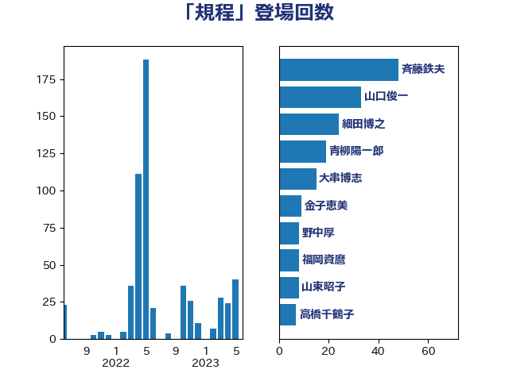

単語「規程」

| 斉藤鉄夫 | 公明党 | 48 回 |
| 山口俊一 | 自由民主党 | 33 回 |
| 細田博之 | 自由民主党 | 24 回 |
| 青柳陽一郎 | 立憲民主党 | 19 回 |
| 大串博志 | 立憲民主党 | 15 回 |
| 金子恵美 | 立憲民主党 | 9 回 |
| 野中厚 | 自由民主党 | 8 回 |
| 福岡資麿 | 自由民主党 | 8 回 |
| 山東昭子 | 自由民主党 | 8 回 |
| 高橋千鶴子 | 日本共産党 | 7 回 |
| 林芳正 | 自由民主党 | 7 回 |
| 鎌田さゆり | 立憲民主党 | 6 回 |
| 川合孝典 | 国民民主党 | 6 回 |
| 山田賢司 | 自由民主党 | 6 回 |
| たがや亮 | れいわ新選組 | 6 回 |
| 水野素子 | 立憲民主党 | 5 回 |
| 伊藤孝恵 | 国民民主党 | 5 回 |
| 野村哲郎 | 自由民主党 | 4 回 |
| 角田秀穂 | 公明党 | 4 回 |
| 清水貴之 | 日本維新の会 | 4 回 |
| 永岡桂子 | 自由民主党 | 4 回 |
| 松本剛明 | 自由民主党 | 4 回 |
| 尾辻秀久 | 無所属 | 4 回 |
| 北側一雄 | 公明党 | 4 回 |
| 加田裕之 | 自由民主党 | 4 回 |
| 長浜博行 | 無所属 | 3 回 |
| 鈴木敦 | 国民民主党 | 3 回 |
| 藤巻健太 | 日本維新の会 | 3 回 |
| 紙智子 | 日本共産党 | 3 回 |
| 武部新 | 自由民主党 | 3 回 |
| 松沢成文 | 日本維新の会 | 3 回 |
| 小野寺五典 | 自由民主党 | 3 回 |
| 小沢雅仁 | 立憲民主党 | 3 回 |
| 城井崇 | 立憲民主党 | 3 回 |
| 音喜多駿 | 日本維新の会 | 2 回 |
| 階猛 | 立憲民主党 | 2 回 |
| 金子恭之 | 自由民主党 | 2 回 |
| 萩生田光一 | 自由民主党 | 2 回 |
| 菅家一郎 | 自由民主党 | 2 回 |
| 石井準一 | 自由民主党 | 2 回 |
| 田中英之 | 自由民主党 | 2 回 |
| 江藤拓 | 自由民主党 | 2 回 |
| 末松信介 | 自由民主党 | 2 回 |
| 有村治子 | 自由民主党 | 2 回 |
| 宮本岳志 | 日本共産党 | 2 回 |
| 塩川鉄也 | 日本共産党 | 2 回 |
| 中山展宏 | 自由民主党 | 2 回 |
| 上杉謙太郎 | 自由民主党 | 2 回 |
| 高橋はるみ | 自由民主党 | 1 回 |
| 鈴木貴子 | 自由民主党 | 1 回 |
| 鈴木義弘 | 国民民主党 | 1 回 |
| 酒井庸行 | 自由民主党 | 1 回 |
| 道下大樹 | 立憲民主党 | 1 回 |
| 近藤昭一 | 立憲民主党 | 1 回 |
| 輿水恵一 | 公明党 | 1 回 |
| 足立康史 | 日本維新の会 | 1 回 |
| 西村康稔 | 自由民主党 | 1 回 |
| 藤岡隆雄 | 立憲民主党 | 1 回 |
| 若宮健嗣 | 自由民主党 | 1 回 |
| 舩後靖彦 | れいわ新選組 | 1 回 |
| 牧島かれん | 自由民主党 | 1 回 |
| 漆間譲司 | 日本維新の会 | 1 回 |
| 浜地雅一 | 公明党 | 1 回 |
| 泉田裕彦 | 自由民主党 | 1 回 |
| 橋本岳 | 自由民主党 | 1 回 |
| 森屋隆 | 立憲民主党 | 1 回 |
| 松野博一 | 自由民主党 | 1 回 |
| 東徹 | 日本維新の会 | 1 回 |
| 後藤茂之 | 自由民主党 | 1 回 |
| 川崎ひでと | 自由民主党 | 1 回 |
| 岡本三成 | 公明党 | 1 回 |
| 小野泰輔 | 日本維新の会 | 1 回 |
| 小林鷹之 | 自由民主党 | 1 回 |
| 小山展弘 | 立憲民主党 | 1 回 |
| 小倉將信 | 自由民主党 | 1 回 |
| 宮下一郎 | 自由民主党 | 1 回 |
| 守島正 | 日本維新の会 | 1 回 |
| 大野泰正 | 自由民主党 | 1 回 |
| 大塚耕平 | 国民民主党 | 1 回 |
| 嘉田由紀子 | 無所属 | 1 回 |
| 和田政宗 | 自由民主党 | 1 回 |
| 加藤勝信 | 自由民主党 | 1 回 |
| 八木哲也 | 自由民主党 | 1 回 |
| 井林辰憲 | 自由民主党 | 1 回 |
| 井坂信彦 | 立憲民主党 | 1 回 |
| 中谷真一 | 自由民主党 | 1 回 |
| 中曽根弘文 | 自由民主党 | 1 回 |
| 上野通子 | 自由民主党 | 1 回 |
| 一谷勇一郎 | 日本維新の会 | 1 回 |